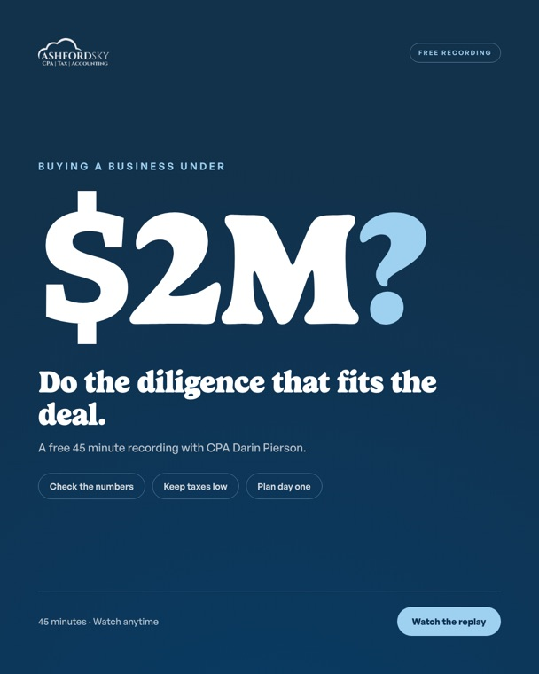

Ashford SkySponsored · 🌐
⋯
🎥 Watch our most popular free webinar: Buying a Business Under $2M. 45 minutes, on demand. The problem: first-time buyers either pay for a full Quality of Earnings report their deal never needed, or skip the checks and find the damage after closing. In the recording, Darin Pierson, CPA, goes through the financial checks that matter on a sub $2M deal: proof of cash, add-backs, working capital, and the tax exposure that follows the business. 📩 Give us your email and we'll send you the recording. Watch it whenever you like.

👍 Like💬 Comment➦ Share